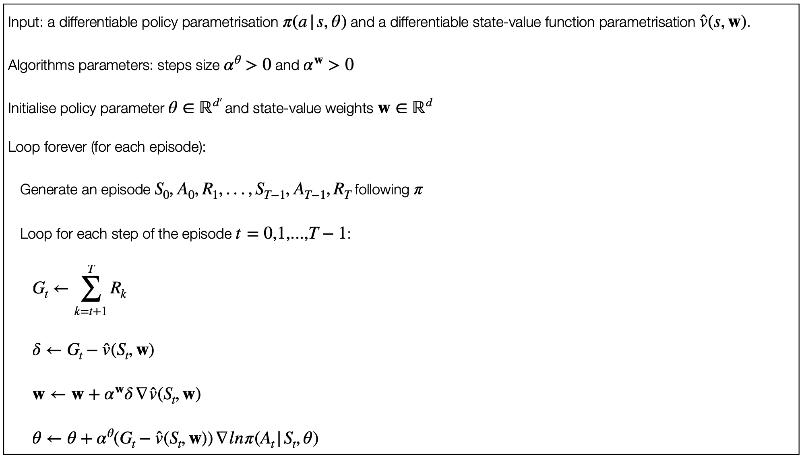

8 Policy Gradient Methods
8.1 Policy Gradient Methods
We now consider a different type of methods from the previous ones that learn instead a parametrised policy that can select actions without consulting a value function.
Policy = mapping between a state and a probability distribution.
| Action-value Methods | Policy-based Methods |
|---|---|
| A value function is consulted Methods based on the calculation of action values (e.g. SARSA, Q-learning, DQN): the values of the actions are learned, and then the selected actions are based on the estimated action values. |
No value function is consulted Methods based on direct policy learning (e.g. REINFORCE, PPO): the actions are selected without relying on action values. |
| Value learning and indirect policy learning Learn \(Q(s,a)\), then derive the policy: the policy is derived from the estimated values (typically greedy or \(\varepsilon\)-greedy wrt. estimated action values). |
Direct policy learning Learn the policy \(\pi(a\vert s)\) directly, without needing \(Q\): the policy is parametrized (usually with neural networks) and updated via gradient wrt. the expected return. |
| Action selection requires action values Policy optimization may occur alongside control, but action values are needed in the first place for action selection. |
Action selection does not require action values Values may be used as support for learning the policy parameter (e.g. variance reduction), but they are not required for action selection. |
8.2 Advantages of Using Policy Approximation according to Softmax in Action Preferences
‣ One advantage of parameterising policies according to the softmax in action preferences is that the approximate policy can approach a deterministic policy. ‣ In fact, with random action. ϵ ϵ -greedy selection over action values, there is always a probability of selecting a ‣ One possibility is to use softmax distribution on the action values, but this will not allow to reach a deterministic policy. ‣ Action values will always differ and, therefore, there will be always a non-null probability of selecting a different action. ‣ Action preferences are different since they do not approach specific values: instead they are driven to produce the optimal stochastic policy. ‣ If the optimal policy is deterministic, the preferences of the optimal actions will be driven infinitely higher than all suboptimal actions (the output of the softmax will be then very close to 1, i.e., close to determinism).
8.3 Issues with REINFORCE
As a stochastic gradient method, REINFORCE has good theoretical convergence properties.
By construction, the expected update over an episode is the same direction as the performance gradient.
This assumes an improvement in expected performance for sufficient small \(\alpha\) and convergence to a local optimum under standard stochastic approximation conditions for decreasing \(\alpha\).
However, since it is a Monte Carlo method, REINFORCE suffers from high variance and this might lead to slow learning.
One way of dealing with this problem is to use baselines and actor-critic methods.
8.4 REINFORCE with Baseline
The policy gradient theorem can be generalised to include a comparison of the action value to an arbitrary baseline \(b(s)\):
\(\nabla J(\theta) \propto \sum_s \mu(s) \sum_a (q_\pi(s,a) - b(s)) \nabla \pi (a \vert s, \theta)\)
The baseline can be any function, even a random variable, as long as it does not vary with \(\alpha\).
The equation remains valid because the subtracted quantity is zero:
\(\sum_a b(s) \nabla \pi(a \vert s, \theta) = b(s) \nabla \sum_a \pi(a \vert s, \theta) = b(s) \nabla 1 = 0\)
The policy gradient theorem with baseline can be used to derive an update rule using similar steps.
The update for REINFORCE with baseline is as follows:
\(\theta{t+1} \doteq \theta_t + \alpha(G_t-b(S_t)) \frac{\nabla \pi(A_t\vert S_t, \theta_t)}{\pi(A_t \vert S_t,\theta_t)}\)
\(G_t =\)
\(=\) the cumulative reward that we get from \(t\).
\(=\) the value of that state for that specific rollout onwards.

8.5 PPO-CLIP
Let’s consider the case in which \(\delta_{ADV} \geq 0\): suppose the advantage for that state-action pair positive. In this case the contribution to the objective reduces to:
\(L(s,a,\theta_t,\theta) = min(\frac{\pi_\theta(a \vert s)}{\pi_{\theta_t}(a \vert s)}, (1 + \epsilon))\)